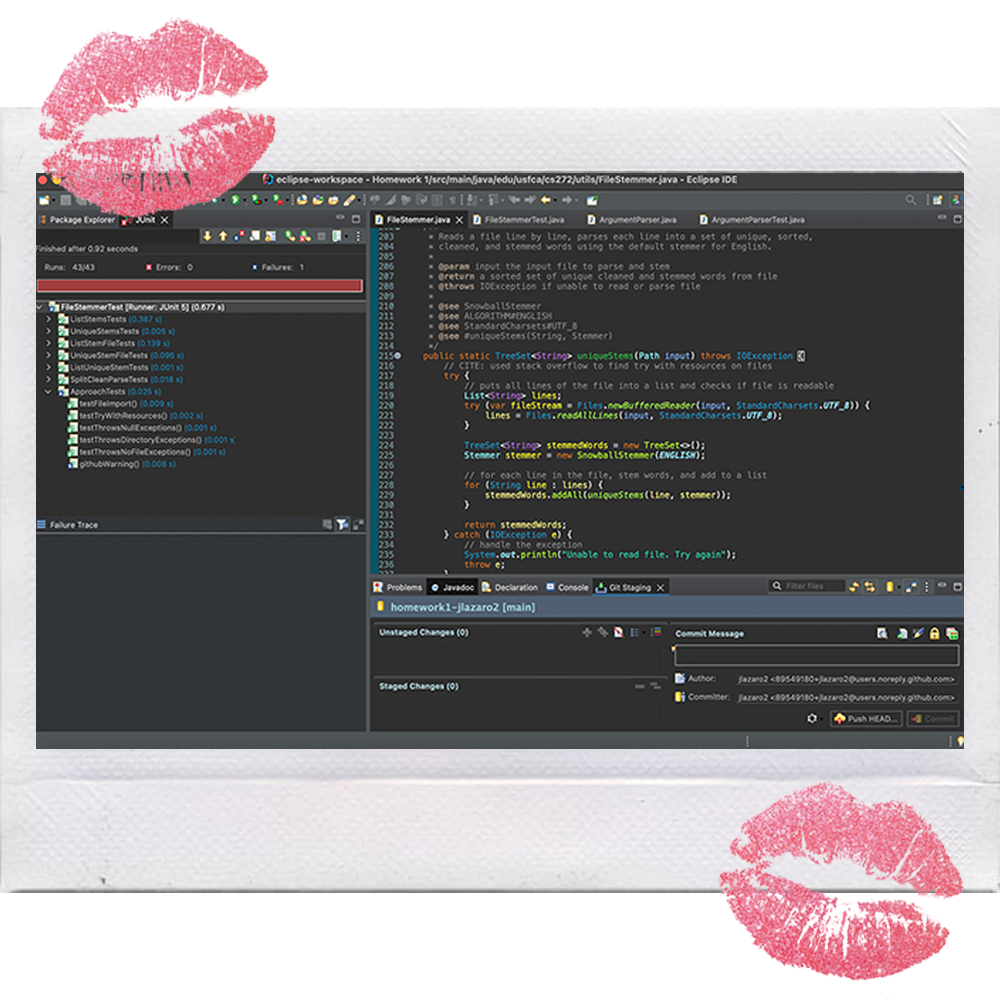

While doing my homework over the weekend, I organize my daily tasks, my schedule, and other parts of my life. I also customised it to fit my aesthetic, so it is Sanrio-themed.
On the homework tab of my dashboard, I keep track of all the assignments I have that week and check the to-do box every time I finish a task.
~alarms~
5 different alarms from 6:00 - 6:50 am because I had work from 7:30 am - 1 pm on Saturday. I’m known for snoozing my alarms, so I really needed to make sure I was up and got ready on time.
~pinterest~
Throughout the day, I like to scroll through my pinterest board for outfit insipration and design inspiration. It is my favorite social media app.
~instagram~
I wanted to post a small collage on my Instagram about my second week of the semester. If you want to follow me, my username is @johannalazaro!
~camera roll~
Spent the day in the city with my friends after work on Saturday when we went to Japantown and Westfield Mall. My friend brought her digital camera and created a shared album to put all the photos together.
~find my friends~
I spent Sunday night on campus and I wanted to see where my friend's locations were. It's also nice seeing who's close to me and where people are.
~bereal~
I am not real at all. Took a photo in an empty classroom in the Harney Science building bc that’s where I did my homework. It was completely empty.
~transit~
Took the 38 Muni to go to work from 12:30 - 4:00 pm on Sunday. Was raining really hard so there were multiple delays.
~lapse~
A fun new version of social media where you take photos, wait for them to develop, and then post them. Kind of like a disposable camera. Some lapses I took over the weekend from Friday, Saturday and Sunday.
~eclipse-workspace~
Did some coding on Friday night for my CS 272 class (it was due at midnight). Very proud of myself because I passed all the test cases.

~google docs and pdf~
Me doing the reading and writing notes for my Theology class on Monday. Very complicated and confusing, but what I spent Sunday night doing.
~spotify~
All my music playlists that I made. Used as background music while I did homework. Pasilyo by Sunkissed Lola is such a cute song and I find myself listening to music in Tagalog most when I am doing homework.